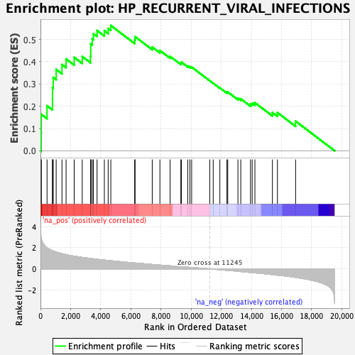
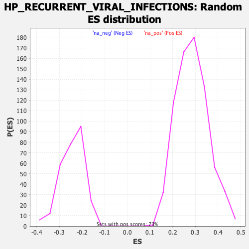

| | | Dataset | Recurrence |
| Phenotype | NoPhenotypeAvailable |
| Upregulated in class | na_pos |
| GeneSet | HP_RECURRENT_VIRAL_INFECTIONS |
| Enrichment Score (ES) | 0.5630259 |
| Normalized Enrichment Score (NES) | 1.9682757 |
| Nominal p-value | 0.0 |
| FDR q-value | 0.031472385 |
| FWER p-Value | 0.445 |
Table: GSEA Results Summary

Fig 1: Enrichment plot: HP_RECURRENT_VIRAL_INFECTIONS
Profile of the Running ES Score & Positions of GeneSet Members on the Rank Ordered List
| SYMBOL | RANK IN GENE LIST | RANK METRIC SCORE | RUNNING ES | CORE ENRICHMENT | | 1 | CD3D | 49 | 2.919 | 0.0814 | Yes |
| 2 | CYBB | 54 | 2.881 | 0.1640 | Yes |
| 3 | CTPS1 | 436 | 2.005 | 0.2020 | Yes |
| 4 | STAT1 | 797 | 1.736 | 0.2335 | Yes |
| 5 | UNC93B1 | 800 | 1.734 | 0.2832 | Yes |
| 6 | SP110 | 847 | 1.696 | 0.3296 | Yes |
| 7 | IL2RG | 1042 | 1.600 | 0.3656 | Yes |
| 8 | ZAP70 | 1427 | 1.447 | 0.3875 | Yes |
| 9 | GFI1 | 1700 | 1.353 | 0.4124 | Yes |
| 10 | IL7R | 2239 | 1.210 | 0.4196 | Yes |
| 11 | BTK | 2772 | 1.093 | 0.4237 | Yes |
| 12 | FLI1 | 3320 | 0.991 | 0.4241 | Yes |
| 13 | NFKB2 | 3337 | 0.988 | 0.4517 | Yes |
| 14 | TCIRG1 | 3338 | 0.988 | 0.4800 | Yes |
| 15 | STK4 | 3437 | 0.969 | 0.5029 | Yes |
| 16 | ELANE | 3514 | 0.955 | 0.5264 | Yes |
| 17 | CIITA | 3756 | 0.915 | 0.5404 | Yes |
| 18 | CD247 | 4241 | 0.837 | 0.5396 | Yes |
| 19 | JAK3 | 4493 | 0.802 | 0.5497 | Yes |
| 20 | UNC119 | 4669 | 0.775 | 0.5630 | Yes |
| 21 | DOCK8 | 6253 | 0.561 | 0.4979 | No |
| 22 | CD3E | 6281 | 0.557 | 0.5125 | No |
| 23 | DCLRE1C | 7419 | 0.421 | 0.4662 | No |
| 24 | RNF168 | 7928 | 0.363 | 0.4506 | No |
| 25 | MALT1 | 8604 | 0.291 | 0.4243 | No |
| 26 | IL2RA | 9317 | 0.211 | 0.3938 | No |
| 27 | MBL2 | 9357 | 0.207 | 0.3978 | No |
| 28 | PNP | 9774 | 0.163 | 0.3811 | No |
| 29 | CD8A | 9919 | 0.148 | 0.3780 | No |
| 30 | MAGT1 | 10033 | 0.136 | 0.3761 | No |
| 31 | GATA2 | 11237 | 0.001 | 0.3144 | No |
| 32 | TYK2 | 11465 | -0.024 | 0.3034 | No |
| 33 | RFX5 | 11907 | -0.076 | 0.2829 | No |
| 34 | RFXAP | 12376 | -0.131 | 0.2627 | No |
| 35 | NHEJ1 | 12431 | -0.138 | 0.2639 | No |
| 36 | ADA | 13108 | -0.228 | 0.2358 | No |
| 37 | SRP54 | 13295 | -0.250 | 0.2334 | No |
| 38 | EPG5 | 13941 | -0.336 | 0.2100 | No |
| 39 | MCM4 | 14052 | -0.348 | 0.2143 | No |
| 40 | RAG2 | 14233 | -0.375 | 0.2159 | No |
| 41 | RAG1 | 15394 | -0.538 | 0.1718 | No |
| 42 | RFXANK | 15730 | -0.591 | 0.1716 | No |
| 43 | PGM3 | 16934 | -0.805 | 0.1329 | No |
Table: GSEA details [plain text format]

Fig 2: HP_RECURRENT_VIRAL_INFECTIONS: Random ES distribution
Gene set null distribution of ES for HP_RECURRENT_VIRAL_INFECTIONS